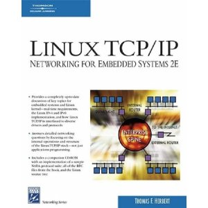

也紀念我們永遠的朋友 李士傑先生（Shih-Chieh Ilya Li）。
十本 Linux 核心開發書籍介紹
我相信絕大部分 Linux 開發者都會告訴你，Driver 的開發比 Linux Application 容易許多，即便寫驅動程式聽起來莫名偉大，其實也不過是一段 C/assembly 的組合程式碼。有別於桌面應用程式，Linux kernel API 較少因爲不同的新軟硬體規格，而進行大幅度 API 更動，反倒是參數的簡化倒是十分常見。由於是傑出的軟體開發者撰寫的核心架構，穩定性已經十分可靠。
相較於 userland 高度複雜的設定機制，Linux Kernel 暴露的界面十分簡單，在硬體穩定的前提之下，你也很難碰到 API 反應與預期不符合的處境。一般開發者對於核心驅動程式上手的時間，應該不會比開發桌面軟體來的更久。花費的時間應該多是在研讀硬體手冊，以及因不嚴謹的開發習慣造成臭蟲而所需的除錯時間。
對於深具經驗的開發者，在學習開發 Linux kernel driver 時，最快的方法莫過於直接解開 Kernel tarball，切進欲開發的 subsystem 目錄，拿出 global, vim, LXR 直接把現成程式碼當作範例學習，很快就可以理解程式結構。不過，偶爾還是需要參考書來驗證對於架構的理解是否正確，另外接觸新的 subsystem 時先閱讀入門文章也可以減少無謂的撞牆期。
所幸，幾位 Linux kernel hacker 也同時是傑出的文件作者。在 Linux kernel source tree 中已有一些各子系統的架構、操作參考文件，涵蓋了基本的 coding style、設計哲學等。另外，像是 Robert Love, Greg Kroah-Hartman (GregKH, PCI, USB maintainer) 等開發者也出版了完整的書籍，很值得參考。
不過市面上針對 Linux kernel 開發的書籍也不少，那一本是適合你的呢？這類的技術書籍，通常針對不同的讀者而有不同的書寫內容，有的偏重知識，有的偏重操作實務。出版版次也會影響所介紹的 API 差異，造成無法編譯其範例，但是也並不因為是舊書，所談之理論就不正確。
以下分享筆者對於市面上 2005 年之後出版的核心開發書籍的評論，希望對於想擴充團隊圖書館的朋友提供些參考。
▲ 圖1 《Linux Kernel in a Nutshell》書籍封面
《Linux Kernel in a Nutshell》是 2006 年底發行，作者是 GregKH，使用核心為 2.6.18，部分操作方式或指令已經略有更改。GregKH 基於讓更多新手參與開發行列，針對的讀者是從未編譯過 Linux kernel，想瞭解下載、設定、編譯需求等等細節，適合剛從其他平臺進入 Linux 核心開發的朋友，可以較快熟悉核心編譯的操作程序。書內主要介紹通用性知識，因此未提到各 distro 間安裝 kernel 的細節 （如 initrd 建制方式）。
LKN 已採 CC BY-SA 2.5 授權。電子書可於 GregKH 的網頁下載。
▲ 圖2 《Understanding the Linux Kernel, Third Edition》書籍封面
《Understanding the Linux Kernel, Third Edition》這本由兩位博士 Daniel P. Bovet 與 Marco Cesati 所撰寫，從 2000 年底出版之後，到 2005 已經是第三版，介紹的核心是 2.6.24。有中譯版。
此書結構以流水帳方式帶過各個子系統，但稍嫌膚淺的僅僅介紹表面的細節，未能給予概觀性的理論說明，也未能直指程式核心。篇幅常用於註記資料結構或函式用途，適合想尋著麵包屑理解 Linux kernel 運作的探險家使用。
▲ 圖3 《Professional Linux Kernel Architecture》書籍封面
《Professional Linux Kernel Architecture》在 2008 年出版，作者是 Wolfgang Mauerer，作者的背景是量子物理學家。在沒有社群內知名開發者的背書與協助下，他完成了一本巨大的書籍，篇幅高達 1368 頁。
有別於 UTLK，也許是為了非科班出生的讀者，作者試著詳盡的敘述作業系統的基本概念，另外一方面也以程式碼告訴讀者 Linux 的運作模式。
如果你讀不下純粹理論導向的作業系統教科書，而想透過 Linux 理解一個作業系統的設計原理，這是適合你的書。本書基於 Linux kernel 2.6.24。
▲ 圖4 《Linux Kernel Development (3rd Edition)》書籍封面
身為知名的 kernal hacker，Robert Love 在《Linux Kernel Development (3rd Edition)》一書中為讀者拆解 Linux kernel source tree，直接從設計理念切入，酌以程式碼輔助，讀者需要有作業系統理論素養以及 Linux 開發經驗，才能消化理解筆者的解剖。最新第三版發表於 2010 年，書中 Linux kernal 則更新到 2.6.34。
簡體中譯版《Linux 内核设计与实现》翻譯自《Linux Kernel Development》第二版。正體中文版有維科圖書有限公司出版沈中庸, 沈彥男翻譯的《Linux 核心開發指南, 2/e》。
▲ 圖5 《Linux Network Internals》書籍封面
《Linux Network Internals》的作者是 Christian Benvenuti，發表於 2005 年。少數專談 Linux Network stacks 的書籍，作者循序的從設定工具、核心啟動開始，逐一介紹封包傳送接受、Bridging、IPv4、Neighboring Subsystem 與 Routing。
書中涵蓋了 Layer 2、Layer 3 等協定, 可惜遺漏了 IPv6、IGMP、PIM、Traffic Control、Netfilter、Virtual devices (802.1Q, bonding, IPIP, GRE) 等等重要元件。讀者需要基本開發能力與網路協定常識才好上手。此書有中譯版。

▲ 圖6 《The Linux TCP/IP Stack: Networking for Embedded Systems 第一版》書籍封面
《The Linux TCP/IP Stack: Networking for Embedded Systems 第一版》發表於 2004 年，最新第二版則於 2006 年發表，針對的版本是 2.6.16，作者是 Thomas F. Herbert。此書對於讀者的定位不明。雖然意圖以一個章節討論嵌入式系統中的 TCP/IP Stack，但除了說明一般嵌入式系統需求外，缺乏實際有用資訊。
書籍想涵蓋各種 TCP/IP Stack 所涵蓋的項目，但章節設計雜亂，從基本的 Network Stack 開始介紹，對於 API 部分又缺乏系統性描述。既無法瞭解網路協定，或撰寫網路程式或作業系統核心架構。
書中時常夾雜敘述與程式碼，令讀者難以連貫消化，讀者需要開啟原始程式碼才能領會作者的思路。這是一本關於網路協定的原始碼註記，適合已具核心開發經驗的開發者參考使用，考量其版本日期，書籍的功能可能比自行追蹤程式碼的效用還差。另外，若你想瞭解嵌入式系統，這也不是你該買的書。
▲ 圖7 《Linux Device Drivers, 3rd Edition》書籍封面
《Linux Device Drivers, 3rd Edition》的作者是 Jonathan Corbet（LWN 的創辦人）、Alessandro Rubini、GregKH。即便 LDD3 已經出版許久，還是所有想寫 Linux kernel driver 的第一優先入門參考書。此書有中譯版。
《LDD3》務實的從實做範例開始，帶領讀者理解各種 subsystem，含括了入門操作與基本觀念，對於初次開發 loadable kernel module (LKM) 的開發者提供了燈塔般的指引。
《LDD3》授權採 CC BY-SA 2.0，線上版可於此下載 https://lwn.net/Kernel/LDD3/。但由於書籍年代較久，針對的核心版本為 2.6.10，書中範例需要一點調整才能正常運作。已有同好改了幾份擺在 github (jesstess, martinezjavier)。
▲ 圖8 《Essential Linux Device Drivers》書籍封面
《Essential Linux Device Drivers》的作者是長期在 IBM 工作的 Sreekrishnan Venkateswaran，參與 Linux Watch、PDA、Nurse Call Systems、Merlin Patient Care System 等等開發專案。有正體中譯版《Linux 驅動程式開發實戰》，以及簡體中譯版《精通 Linux 驅動程序開發》。
這本書是作者的實務工程筆記，出版於 2008 年，針對核心為 2.6.23/2.6.24，透過此書新手可以從中漫遊一個深具經驗的開發者，如何從原始碼迷霧之中理解 Linux device driver，老手或許可從雜亂的描述中再次驗證自己的理解。
雖然篇幅高達 744 頁，卻被引用程式碼佔了許多頁面。這本書不足以提供開發者撰寫驅動程式的基本觀念，也無法協助理解作業系統概觀。
作者另有一小冊 Debugging Linux Systems 電子書短短 90 頁，帶過幾個常見的核心除錯工具與技巧，很有實務參考價值。
▲ 圖9 《The Linux(R) Kernel Primer: A Top-Down Approach for x86 and PowerPC Architectures》書籍封面
《The Linux(R) Kernel Primer: A Top-Down Approach for x86 and PowerPC Architectures》出版於 2005 年，作者是 Claudia Salzberg Rodriguez, Gordon Fischer, Steven Smolski。有中文版，但評價頗差。
書名讓人非常期待總算有一本核心介紹書籍是講述 x86 外的硬體平臺，畢竟 RISC vs CISC 架構的不同，endianness、alignment、calling convention 等，應當有許多寫核心驅動程式應該注意的事項。但是整本書只在 2.2 節稍微說一下寫 Assembly 時，PowerPC、x86 的指令差異，剩下的細節根本沒提！
整本書還是著重在一般核心的結構介紹。
而書中除了少量的插圖之外，根本沒有多少邏輯上的說明跟描述。通篇拆解程式碼，對資料結構作註解。這些資訊任何有點基礎的工程師都可自行閱讀程式碼及程式碼註解。新入門工程師還可能因爲書中解釋而疑惑。
除非你想寫沒有價值的書評，否則不建議購買。
▲ 圖10 《Linux(R) Debugging and Performance Tuning: Tips and Techniques》書籍封面
《Linux(R) Debugging and Performance Tuning: Tips and Techniques》出版於 2005，作者是 Steve Best。此書以一般這類書籍少見的內容著手，內容除了應用程式之外，還包括從核心切入的除錯、效能測試，而這方面的技術資訊總是一下就過時了。
作者試著從基本的 Profiling 實務開始，介紹 gdb、應用程式記憶體管理，再講核心的各種資訊界面。很可惜，以一本專講除錯與效能測試的書來說，範例與介紹過於粗淺，以第十二章 Dynamic Probes 為例，其介紹深度可能還比不上 Documents/kprobes.txt 中的概念介紹與 IBM developerWorks 的範例介紹。
適合剛切換到 Linux 的開發者，從這本書可概略學得各種基本開發工具的入門資訊。
作者簡介
蔡志展 (Rex Tsai) 或網名 chihchun，現為自由工作者，從事開源軟體顧問或開發服務。倡議並推廣自由軟體與開放源碼，早期 KaLUG 成員，現常出席 Tossug、 HackingThursday 聚會，亦是開源人年會 (COSCUP) 籌備志工。長期 Debian、OpenWrt 使用者。關注議題甚廣，進一步資訊請參考 https://people.debian.org.tw/~chihchun/。
專欄總覽


E-Mail：contact@openfoundry.org Address：台北市南港區研究院路2段128號 中央研究院資訊科學研究所 . 隱私權條款. 使用條款